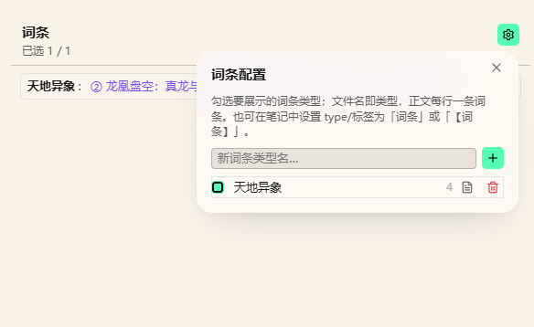

词条
功能简介
功法、称谓、器物名等速查列表。不是角色卡（角色在 设定/角色）。
本页属于「写作辅助」，按 功能简介 → 界面元素 → 操作方法与步骤 → 键盘操作 → 命令行 → 注意事项 组织，末尾的「其他」放补充说明与相关页面。
界面元素
界面元素一览
- 词条面板
- 类型文件
- 逐行词条与顺序

数据落盘
词条正文在作品 词条/；勾选与顺序在 System/glossary.json。
操作方法与步骤
怎么打开
Ribbon list-tree，命令「打开词条面板」。
操作
- 右上角齿轮打开「词条配置」。
- 文件名 = 词条类型。点 + 新建类型文件，或把已有笔记的 type/tags 设为「词条」「glossary」「【词条】」。
- 勾选要展示的类型；拖左侧把手改显示顺序。
- 每个类型可「按行拆分」（默认一行一条）或「按标题拆分」（
#标题）。 - 主界面点卡片换一条随机词条。
键盘操作
| 按键 | 作用 |
|---|---|
| Ctrl/Cmd+P | 打开 Obsidian 命令面板，按名称搜索并执行本页「命令行」里的命令（Obsidian 自带，不是插件默认快捷键） |
| Enter | 提交当前输入 / 确认（各类弹窗、内联输入、列表项） |
| Esc | 取消编辑 / 关闭弹窗或抽屉 |
所有视图级快捷键在输入框、正文编辑态内都不触发（isTypingTarget 判定）；隐藏或失焦的面板也不响应。下表的「命令行」是另一套入口，两者不要混为一谈。
命令行
在命令面板（Ctrl/Cmd+P）里搜「命令面板里的名称」这一列的中文名即可执行。下表同时给出命令 ID，方便在「设置 → 快捷键」里精确查找、以及在 data.json / 同步配置里核对。
| 命令面板里的名称 | 命令 ID |
|---|---|
| 打开词条面板 | novel-open-glossary |
以上命令均没有默认快捷键：源码里的 addCommand 没有声明 hotkeys，需要快捷键请自行到「设置 → 快捷键」绑定。命令面板本身由 Obsidian 提供，不是插件命令。
注意事项
通用限制
- 本插件 manifest 声明
isDesktopOnly: true，最低 Obsidian 1.8.7；笔记始终是明文 Markdown，插件只读写 frontmatter 与System/*.json。 - 插件没有为任何命令注册默认快捷键，需要快捷键请到「设置 → 快捷键」按命令名搜索后自行绑定。
- 视图级快捷键只在画布 / 视图聚焦且可见时生效，输入框内不触发。